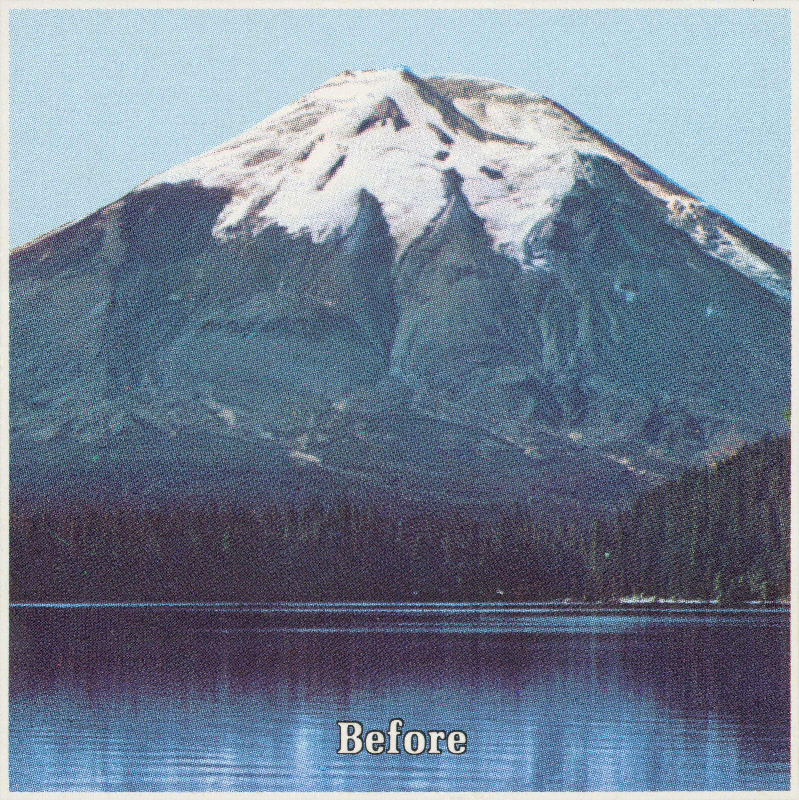
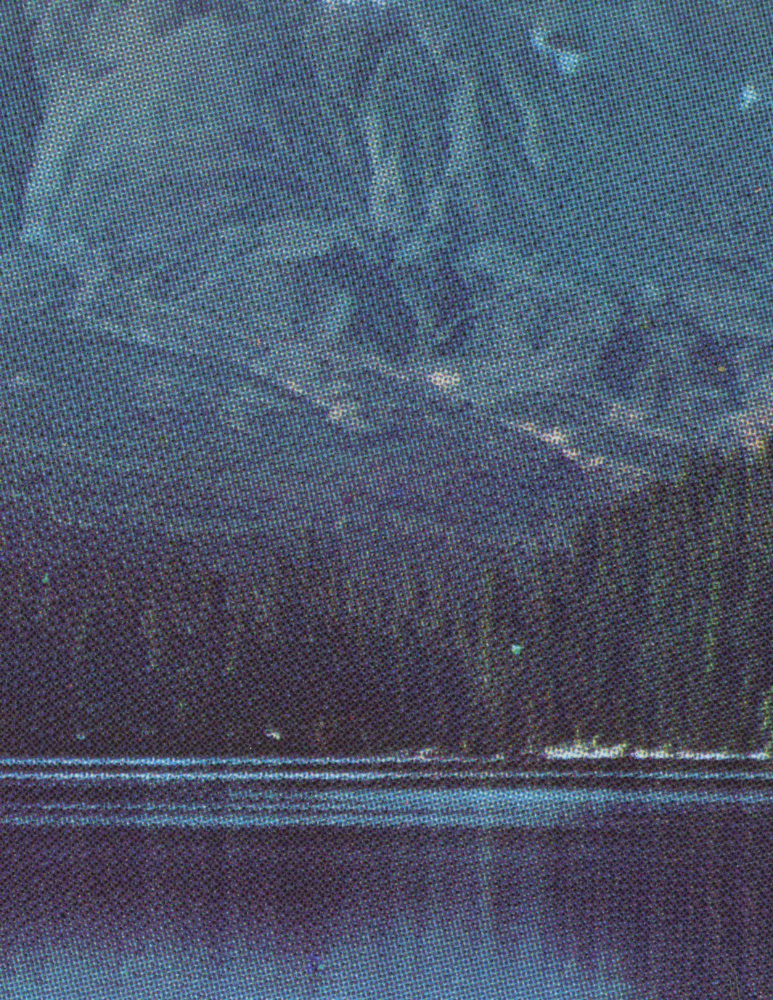
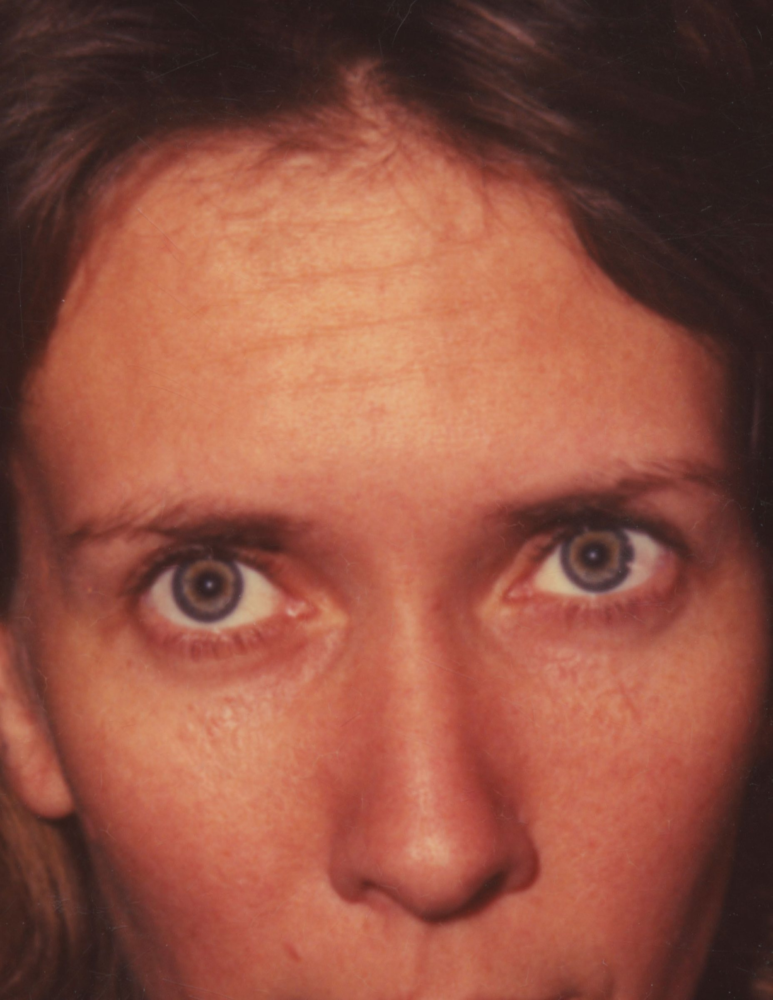

Before, 2016
Before (Inpatient Press, 2016) is a collection of found “before and after” diptychs from print media with their “afters” taken away. Inpatient Press ↗




Before (Inpatient Press, 2016) is a collection of found “before and after” diptychs from print media with their “afters” taken away. Inpatient Press ↗


